带着问题，找到题目。
搜索“零截断泊松”“Fisher”“卷积”，或者直接输入题号。题干与解析均有独立网页，方便反复查阅。
共 516 道题
贝叶斯公式
某保险组合中，高风险客户占 30%，其一年内出险概率为 0.12；其余客户一年内出险概率为 0.03。随机抽取一名客户，已知其一年内出险，则该客户属于高风险组的概率为多少？
超几何概率
10 份保单中有 4 份存在信息缺项。现不放回地随机抽取 3 份复核，其中至少 2 份存在缺项的概率为多少？
独立性与条件概率
事件
 与
与  相互独立，，
相互独立，， 。已知至少有一个事件发生，恰好只有 发生的条件概率是多少？
。已知至少有一个事件发生，恰好只有 发生的条件概率是多少？两两独立与相互独立
独立抛掷两枚均匀硬币。
表示第一枚为正面， 表示第二枚为正面， 表示两枚结果相同。下列说法正确的是哪项？
表示两枚结果相同。下列说法正确的是哪项？串并联系统
某系统由两条并联支路组成，每条支路各含两个串联部件。四个部件相互独立，每个部件正常工作的概率均为 0.90。系统只要至少一条支路正常就能工作，其正常工作的概率为多少？
分布函数的跳跃
随机变量
 的分布函数在 时为 0，在 时为
的分布函数在 时为 0，在 时为  ，在
，在  时为
时为  ，在
，在 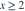
时为 1。则 等于多少？泊松分布
赔款次数
 服从泊松分布，且
服从泊松分布，且  。则
。则  为多少？
为多少？几何分布的无记忆性
每次独立试验成功的概率为 0.20，
是第一次成功时的试验序号，从 1 开始计数。则  等于多少？
等于多少？指数损失与免赔额
单次损失
服从均值为 2000 元的指数分布。保险合同设置 1000 元的普通免赔额，赔款 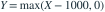
。不附加其他限额或比例， 为多少元？单调变换的密度
在 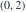
上均匀分布，令 。在
。在 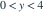
上， 的概率密度为哪项？以下各式在该区间外均取 0。
的概率密度为哪项？以下各式在该区间外均取 0。密度归一化与矩
随机变量
的密度在  上为
上为  ，其余为 0，其中
，其余为 0，其中  为常数。则
为常数。则  为多少？
为多少？正态分布的可加性
25 项相互独立的费用均服从 ，其中第二个参数是方差。总费用记为
 。给定 ，则 为多少？
。给定 ，则 为多少？条件密度
随机向量
 的联合密度在
的联合密度在  上为 2，其余为 0。对
上为 2，其余为 0。对  ，
，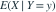
为多少？联合密度与协方差
的联合密度在  上为
上为  ，其余为 0。则
，其余为 0。则  为多少？
为多少？二维变换与独立性
 相互独立，均服从速率参数为 2 的指数分布。令
相互独立，均服从速率参数为 2 的指数分布。令  ，
， 。下列描述正确的是哪项？Gamma 分布采用形状与速率参数化。
。下列描述正确的是哪项？Gamma 分布采用形状与速率参数化。独立均匀变量之和
相互独立，均在  上均匀分布。则
上均匀分布。则  等于多少？
等于多少？泊松条件分布
 与
与  相互独立。已知
相互独立。已知  ，则
，则  为多少？
为多少？二维正态条件均值
服从二维正态分布，，，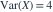
，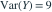
，相关系数为 0.5。则 为多少？
为多少？复合泊松方差
总赔款
 ，其中
，其中 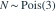
，各 独立同分布且与 独立，
独立同分布且与 独立，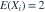
，；当 时
时  。则 为多少？
。则 为多少？线性组合方差
，，。则
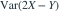
为多少？全方差公式
客户类型
 满足
满足  。给定
。给定  时，赔款次数 服从均值为 1 的泊松分布；给定
时，赔款次数 服从均值为 1 的泊松分布；给定  时， 服从均值为 4 的泊松分布。则
时， 服从均值为 4 的泊松分布。则  为多少？
为多少？均方误差最佳预测
 ，
， ，其中
，其中  与 独立，
与 独立， ，
， 。在所有满足平方可积的
。在所有满足平方可积的  中，使
中，使 ![E[(Y-g(X))^2]](practice/math/36e0e580aa62024bde8d.svg) 最小的预测函数及最小值为哪项？
最小的预测函数及最小值为哪项？概率母函数
 。给定 后，每次事件以概率 0.3 独立地产生赔款，赔款事件总数为
。给定 后，每次事件以概率 0.3 独立地产生赔款，赔款事件总数为  。则 的概率母函数
。则 的概率母函数  为哪项？
为哪项？特征函数
 相互独立且均服从
相互独立且均服从  ，其中第二个参数为方差。令
，其中第二个参数为方差。令  ，其特征函数
，其特征函数  为哪项？
为哪项？中心极限定理与连续性修正
400 份相互独立的保单各以概率 0.10 发生一次赔款。总赔款次数为
。使用正态近似并作连续性修正估计 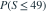
。给定 ，，结果为哪项？泊松极大似然估计
来自
 的 20 个独立观测之和为 46。则
的 20 个独立观测之和为 46。则  的极大似然估计值为多少？
的极大似然估计值为多少？均匀分布端点估计
从
 中独立抽取 5 个样本，其最大值为 8。采用样本最大值的常数倍构造
中独立抽取 5 个样本，其最大值为 8。采用样本最大值的常数倍构造  的无偏估计，则估计值为多少？
的无偏估计，则估计值为多少？指数分布的参数化
独立同分布，密度为
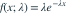
，。样本总和为 25。速率参数 的极大似然估计值与矩估计值分别为多少？完全充分统计量与 UMVU
 独立同分布于 Bernoulli
独立同分布于 Bernoulli ，
， ，
， 。记
。记  。下列哪项是
。下列哪项是  的一致最小方差无偏估计？
的一致最小方差无偏估计？Rao Blackwell 改进
独立同分布于 ，。令  ，用充分统计量 对无偏估计
，用充分统计量 对无偏估计  作 Rao-Blackwell 改进。得到的
作 Rao-Blackwell 改进。得到的  的估计为哪项？
的估计为哪项？正态均值置信区间
正态总体的均值与方差均未知。样本量 16，样本均值为 5，无偏样本方差为 4。给定 ，均值的双侧 95% 置信区间为哪项？
正态方差置信区间
来自正态总体的样本量为 10，无偏样本方差为 4。记
 为累积分布概率为 q 的分位数，给定
为累积分布概率为 q 的分位数，给定  ，
， 。总体方差的双侧 95% 置信区间约为哪项？
。总体方差的双侧 95% 置信区间约为哪项？频率学派置信区间解释
对一个固定但未知的总体均值，按覆盖率恰为 95% 的程序反复独立抽样并构造区间。以下哪项是频率学派下正确的解释？
经验分布函数
样本观测值为 1、2、2、4、6。以经验分布估计
 ，估计值为多少？
，估计值为多少？核密度估计
观测值为 0、1、2、4。采用核密度估计
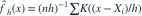
，其中 ；当 时 ，其余为 0。则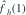
为多少？相合性与无偏性
是来自 的独立样本， 。比较
。比较  与
与  ，下列说法正确的是哪项？
，下列说法正确的是哪项？功效函数
独立同分布于  ，样本量 16。检验
，样本量 16。检验  对
对  ，当
，当  时拒绝原假设。给定
时拒绝原假设。给定  ，则在
，则在  时该检验的功效约为多少？
时该检验的功效约为多少？Neyman Pearson 引理
 独立同分布于速率为 的指数分布。检验
独立同分布于速率为 的指数分布。检验  对
对  。令
。令  。显著性水平为 0.05 的最强检验拒绝域具有哪种形式？
。显著性水平为 0.05 的最强检验拒绝域具有哪种形式？单侧一致最大功效检验
独立同分布于  ，
， 已知。对
已知。对  与
与  ，记
，记  。下列哪项给出水平为 0.05 的一致最大功效检验？
。下列哪项给出水平为 0.05 的一致最大功效检验？广义似然比
独立同分布于 ， 已知。检验
已知。检验  对
对  。定义
。定义  ，则
，则  为哪项？
为哪项？拟合优度检验自由度
把观测值分为 5 个固定类别，采用 Pearson 卡方拟合优度检验。原假设分布中有 2 个独立未知参数，均用同一组分类频数作极大似然估计。假定满足常规正则条件且各格期望频数充分大，则渐近卡方分布的自由度为多少？
Pearson 卡方统计量
100 次独立观测落入 4 个类别的频数分别为 10、20、30、40。检验四类概率是否都为 1/4。给定
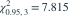
，在 5% 显著性水平下的结论为哪项？配对 t 检验
对 9 个对象分别测量调整前后指标，令差值为“调整后减调整前”。差值独立且来自正态总体，样本均值为 1.5，无偏样本标准差为 1.8。检验差值总体均值是否为 0。给定 ，双侧 5% 检验的结论为哪项？
无偏检验的含义
某检验的大小恰为
 ，其功效函数为
，其功效函数为  。根据无偏检验的通常定义，对备择参数集合中的任意 ，应满足哪项？
。根据无偏检验的通常定义，对备择参数集合中的任意 ，应满足哪项？一元回归最小二乘
对含截距的一元线性回归，已知
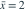
，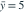
，，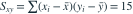
。预测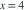
时的均值为多少？预测区间标准误
经典正态一元线性回归含截距，样本量为 10，残差标准差估计为
 。在
。在  处预测一个独立的新观测值，预测误差的估计标准差为哪项？
处预测一个独立的新观测值，预测误差的估计标准差为哪项？多元回归残差自由度
含截距的经典线性回归模型有 3 个解释变量，样本量 30，设计矩阵满列秩，残差平方和为 104。误差方差的无偏估计值为多少？
嵌套模型的部分 F 检验
正态同方差回归的两个模型相互嵌套，均含截距。完整模型有 4 个解释变量，简化模型对完整模型施加 2 个独立线性约束。样本量 25，完整与简化模型的残差平方和分别为 100 和 150。给定 ，检验这些约束的结论为哪项？
完全多重共线性
在线性模型
 中，设计矩阵的第三个解释变量列在所有观测上都严格等于前两个解释变量列之和。下列说法正确的是哪项？
中，设计矩阵的第三个解释变量列在所有观测上都严格等于前两个解释变量列之和。下列说法正确的是哪项？自变量选择与 AIC
同一组 40 个观测拟合两个正态同方差回归模型，均含截距。模型 R 有 3 个回归系数、残差平方和 120；模型 F 有 5 个回归系数、残差平方和 108。采用
 ，其中 k 为回归系数个数，C 包含两模型相同的项。给定
，其中 k 为回归系数个数，C 包含两模型相同的项。给定  ，按 AIC 应选择哪一模型？
，按 AIC 应选择哪一模型？无记忆性
以下哪组分布都具有无记忆性？几何分布记录首次成功的试验序号。
三角形密度
密度图像为顶点
 构成的三角形，
构成的三角形， 。已知
。已知  且
且  ，求
，求  。
。柯西分布变换
的密度为 ![1/[\pi(1+x^2)]](practice/math/117669534bcaf1de5e29.svg) ，令
，令  。 的密度是？
。 的密度是？和的密度
联合密度在
 上为
上为 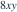
。令 ，当 时，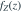
为？两类错误与样本量
两独立正态总体方差分别为 43、392，各抽取 n 个样本。以 拒绝均值相等；要求均值差为 0 时第一类错误 0.05，均值差为 5 时第二类错误 0.15。取
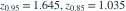
，n 约为？方差区间的变换
果冻净重独立服从正态分布，样本量 6、无偏样本方差 0.112。每盒装 4 枚独立果冻；空盒重量与果冻独立，方差已知为 0.06。取
 ，由果冻方差的双侧 95% 区间换算，整盒重量方差区间的上限约为？
，由果冻方差的双侧 95% 区间换算，整盒重量方差区间的上限约为？似然比的方向
密度为
 ，
， 。观测为 0.36、0.51、0.54、0.55、0.70。定义
。观测为 0.36、0.51、0.54、0.55、0.70。定义  ，则 R 约为？
，则 R 约为？独立性判定
以下哪项与事件 A、B 独立等价？假定
 。
。随机区间长度
正态总体均值、方差均未知。用通常双侧 95% t 区间估计均值，希望区间长度不超过 的概率至少为 95%。在候选 n=14、15、16、17 中，已知
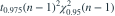
在 n=14、15 时分别约为 104.37、108.95。最小可选 n 为？单侧 p 值
正态总体标准差已知为 280。n=14，样本均值 1126。检验 对 。给定 ，p 值约为？
停止规则下的期望
各次生育独立，男孩、女孩概率均为 1/2。每户生育到第一个男孩即停止。每户男孩数的期望与女孩数的期望之比为？
特征函数
令
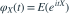
且 。下列哪项错误？配对 t 检验
5 对前后测量的差值（后减前）为 7、−3、11、13、−6。假定差值来自正态总体，检验差值均值为 0 的 t 统计量约为？
等方差双样本检验
两独立正态样本：n=15、均值 30、标准差 3；m=10、均值 b、标准差 1。假设总体方差相等，采用 5% 双侧 t 检验，
 。使均值相等假设不被拒绝的 b 的上端点约为？
。使均值相等假设不被拒绝的 b 的上端点约为？函数的独立性
“X 与 Y 独立”是“
 与
与  独立”的什么条件？
独立”的什么条件？三角区域的相关
在顶点
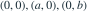
的三角形上均匀取点，其中 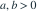
。相关系数为？均值差置信区间
两个独立正态总体方差相等。两样本量均为 5，样本均值为 15、10，无偏方差均为 2.125。给定
 ，均值差 95% 区间下限约为？
，均值差 95% 区间下限约为？泊松拟合优度
100 天的销量按 0、1、2、3、4、至少5 分组，频数为 7、23、25、26、14、5。检验分布为参数已知的 Pois(2)，取
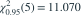
。结论为？Catalan 计数
6 张 +1 卡与 6 张 −1 卡随机排序。从 0 开始逐张累计，所有中途累计和均非负的概率为？
线性无偏估计
独立同分布，密度为  。在
。在  中，要求 T 无偏估计 θ 且方差最小，则 a 为？
中，要求 T 无偏估计 θ 且方差最小，则 a 为？正态条件期望
二元正态向量满足
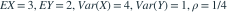
。令 。若选择 c 使 与 z 无关，则此常数为？负二项矩估计
负二项模型的均值为 ，方差为
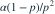
。10 个观测值之和为 100、平方和为 1530。用前两阶原点矩估计 α，约为？样本均值的方差
独立同分布样本的总体密度为
 。样本量为 n，样本均值的方差为？
。样本量为 n，样本均值的方差为？列联表独立性
2×3 列联表的两行计数为 (47,38,20) 与 (15,25,27)。总数 172。在 5% 水平检验行、列分类独立，临界值为 5.991。正确结论为？
泊松和与库存
两名售货员的独立日销量分别为 Pois(1)、Pois(2)。至少准备多少件才能使一天不缺货的概率达到 90%？给定 Pois(3) 的 F(4)=0.8153、F(5)=0.9161。
泊松混合的贝叶斯更新
两类司机比例为 75%、25%，各类的每年事故数为 Pois(0.1)、Pois(0.2)。同一司机给定类型后各年独立。已知去年恰有 1 次事故，今年零事故的概率约为？
二次多项式最小二乘
拟合
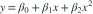
。给定 n=5，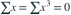
，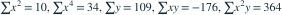
。拟合曲线在 x=1 的值约为？均匀次序统计量
100 个独立 U(0,1) 变量中，第 20 小的变量服从哪种分布？
独立样本的条件信息
每件产品独立地以 5% 概率不合格。随机取一套 4 件，随机检验 2 件，均合格才买下剩余 2 件。已知受检两件合格，买下的两件也都合格的概率为？
正态均值区间
正态总体标准差为 5，n=49，双侧 95% 均值区间为
![[a,6a/5]](practice/math/763060ed58c6c9a95e82.svg) 。取 z=1.96，样本均值为？
。取 z=1.96，样本均值为？逐步回归
在常见的逐步变量选择中，下列原则最合理的是？
指数最小值的二阶矩
X、Y、Z 独立，均服从均值为 2 的指数分布。以三者最小值为半径的圆，其面积期望为？
简单回归统计量
n=10 的含截距简单回归得到斜率 −0.42，总平方和 2015、回归平方和 1576。以下哪项正确？
条件组合计数
从标号 1、2、3、4 的卡中等概率有放回抽取 4 次：1 加一个白球；2 或 3 加一白一黑；4 加二白一黑。已知共加入 8 球，恰有 2 黑球的概率为？
更新递推
每次独立地以相等概率得到 1 分或 2 分，累计得分从 0 开始。某次累计分恰好到达 6 的概率为？
正态概率优化
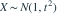
，t>0 且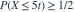
。给定 ，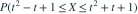
的最大值约为？方差比统计量
两个独立正态样本：n=10，
 ；m=8，
；m=8， 。按
。按  定义的方差比统计量约为？
定义的方差比统计量约为？核分布函数估计
用样本 2、3、5、7 估计分布。每个观测点处放置宽度为 8 的均匀密度，即在 [xᵢ−4,xᵢ+4] 上密度 1/8，再取四个密度的平均。估计的 P(X≤6) 约为？
Cramér–Rao 下界
总体密度
 ，x≥0、θ>0。n 个独立观测下，θ 的无偏估计方差的 C-R 下界为？
，x≥0、θ>0。n 个独立观测下，θ 的无偏估计方差的 C-R 下界为？拟合优度中的未知频数
四类计数为 (280,x,80,120−x)，理论比例为 9:3:3:1，x 为 0 到120的整数。5% 拟合优度检验临界值 7.8147。使原假设不被拒绝的 x 的最大整数为？
切比雪夫与中心极限定理
100 个独立同分布变量的均值均为1、方差均为0.64，和为T。用切比雪夫所得
 下界记 p₁，用 CLT 所得近似记 p₂。给定 Φ(2.25)=0.9878，p₂−p₁约为？
下界记 p₁，用 CLT 所得近似记 p₂。给定 Φ(2.25)=0.9878，p₂−p₁约为？均匀分布矩估计与 MLE
U(a,b) 样本为 −2.6、−1.7、−1、0、1、1.9、2.4。b 的前两阶矩估计减去最大似然估计，约为？
对数线性回归
数据 x=(4.1,23.0,84.8,120.2)，y=(13.0,9.0,2.5,1.3)。将模型
 对数化，对
对数化，对  做普通最小二乘。所估 α 与 β 的乘积约为？
做普通最小二乘。所估 α 与 β 的乘积约为？概率母函数
X、Y 独立，概率母函数为
 、
、 。
。 为？
为？全方差公式
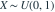
。给定 X=x，Y、Z 条件独立，分别服从 U(0,x)、U(x,1)。令 R=Z−Y， 为？联合密度的矩
联合密度在
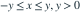
上为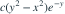
。 为？边际正态与联合正态
只知道 X、Y 都边际服从 N(0,1)，以下哪项一定成立？
Gamma 形状参数的充分性
独立样本来自形状 α 未知、速率 β 已知的 Gamma 分布。以下哪个是 α 的充分统计量？
错排与固定点
8 人各交一份礼物，8 份礼物等可能地随机分配给 8 人，每人恰得一份。恰有2人拿回自己礼物的概率约为？
分段密度条件期望
X 的密度在 0≤x<1 上为0.5，在 x≥1 上为 ，其余为0。 为？
联合密度的边际
联合密度在单位正方形内部为
。X 的边际密度为？区域积分
联合密度为
 ，支持为
，支持为  。 等于？
。 等于？条件均值
联合密度为
，支持为单位正方形内部。 为？
为？互斥类别指示量
某次分类的 A、B、C 类概率为 0.8、0.1、0.1。令 I、J 分别为 A、B 类的指示量。相关系数为？
概率积分变换
X 服从速率1的指数分布，
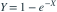
。Y 的特征函数在 t≠0 时为？有效估计
独立样本来自均值为 θ 的指数分布。以下关于样本均值的结论哪项正确？
二项分布正态近似
4900 人各自独立地以0.1概率到场。用不作连续性修正的正态近似，要求至少99%的概率座位足够。取
 ，应至少设多少座位？
，应至少设多少座位？指数次序统计量
5个独立 Exp(λ) 变量中，第2小值的密度在 x>0 时为？
全概率与责任归属
三名录入员工作份额为0.38、0.40、0.22，错误率为0.01、0.015、0.008。抽到一份错误记录，它由第二名录入员完成的概率约为？
t 与 F 的关系
正态样本量n，
 。统计量
。统计量  服从？
服从？半正态的变异系数
Z 为标准正态变量，Y=|Z|。Y 的标准差与均值之比为？
条件分布构造
，给定 X=x 后 Y 在 (0,x) 均匀。Y 在 (0,1) 上的边际密度为？
固定阈值的样本量
样本来自 N(μ,1)，以样本均值至少2.6拒绝 μ=2。要求 μ=3 时第二类错误概率不超过0.01。取
 ，最小整数样本量为？
，最小整数样本量为？多数胜制
某选手每局独立获胜的概率为0.6。先赢3局获胜的五局三胜制，其获胜概率为？
Pareto 最大似然
总体密度 ，x>c，c已知、θ>0。θ 的 MLE 为？
均匀先验的截断更新
总体为 U(θ,θ+1)，先验 θ~U(10,16)。观测为11.7、11.1、12.0。后验分布为？
离散均匀拟合优度
10 个类别的频数为74、92、83、79、80、73、77、75、76、91，总数800。检验十类等概率，Pearson 统计量为？
混合硬币后验
袋中3枚公平硬币和1枚两面均正面的硬币。随机选一枚，连续独立投3次都为正面。该硬币公平的后验概率为？
正态线性组合与 F
X₁、X₂ 独立服从 N(0,σ²)。
![[(X_1+X_2)/(X_1-X_2)]^2](practice/math/5e970342da5d447fedf8.svg) 服从？
服从？Poisson 的充分统计量
独立样本来自 Pois(λ)，令
。给定 T=t 后，向量 服从？中断比赛的公平分配
两人每局独立且各以1/2概率获胜。中断时甲还需2胜、乙还需3胜。按最终胜率分配奖金，甲的份额为？
封顶变量的点质量
 ，
， 。Y 在2处的概率质量为？
。Y 在2处的概率质量为？封顶观察与无记忆性
，。 为？
为？相合矩估计
密度在 [−1,1] 上为
 ，−1<θ<1。以下哪个是θ的相合估计？
，−1<θ<1。以下哪个是θ的相合估计？位置族 Fisher 信息
总体密度为
![f(x;\theta)=e^{-(x-\theta)}\exp[-e^{-(x-\theta)}]](practice/math/5de12b2d6e8071a5ec1f.svg) 。n个独立样本下θ的无偏估计C-R下界为？
。n个独立样本下θ的无偏估计C-R下界为？受限参数的 MLE
伯努利成功概率限定在 [0.50,0.75]。样本成功比例为0.82，MLE为？
指数先验与正态似然
 ，θ先验为速率λ的指数分布。θ的后验为哪种形式？
，θ先验为速率λ的指数分布。θ的后验为哪种形式？势函数
密度
 ，0<x<1。用拒绝域X≤1/2检验θ=1对θ<1。势函数为？
，0<x<1。用拒绝域X≤1/2检验θ=1对θ<1。势函数为？最大次序统计量的均值
两人独立出价，均服从 U(1,2)。成交价取较大出价，期望为？
总赔付与保费
n份独立保单的赔款均为均值5的指数分布。用CLT使总保费覆盖总赔款的概率约95%，给定z₀.₉₅=1.645，每份保费约为？
噪声信道贝叶斯更新
输入AAAA、BBBB、CCCC等概率。每位独立传输，正确概率0.6，另两字母各0.2。收到ABCA，输入为AAAA的后验概率为？
分位点
密度在0<x<1上为2x。下侧0.95分位点为？
已知均值的充分统计量
正态总体均值 μ 已知、方差未知。关于方差的充分统计量是？
均匀最大值的无偏修正
样本来自U(0,θ)，量M为样本最大值。使aM无偏估计θ的a为？
最小均方误差系数
样本来自U(0,θ)，M为最大值。在估计aM中使MSE最小的a为？
联合密度归一化
联合密度为 ，支持0<y<x<1。常数a为？
条件期望的积分
联合密度为
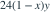
，0<y<x<1。0<y<1时， 为？二项检验的功效
3个独立伯努利观测，H₀:p=0.5，H₁:p=0.75。至少观察到1次成功即拒绝H₀。在H₁下的功效为？
三分类拟合检验
三类观测为26、66、28，理论比例1:2:1。Pearson统计量为？
单因素误差均方
4组各重复3次，组内无偏样本标准差为1.5、2.0、1.6、1.2。方差分析的误差均方为？
两状态递推
第一次硬币正面概率为α。以后每次与前次结果相同的条件概率为β，0<β<1。设第n次正面概率为pₙ。正确递推为？
分布变换
X的密度为2(1−x)，0<x<1。哪个单调递增变换使结果服从Exp(1)？
联合密度与相关系数
联合密度为
 ，0<y<x<∞。X、Y的相关系数为？
，0<y<x<∞。X、Y的相关系数为？空盒指标法
n个球独立等概率投入n个盒子。空盒数的期望为？
圆周几何概率
圆周上独立均匀取3点，三点能落在某个半圆内的概率为？
比值分布
(X,Y)在x>0、y>0、x+y<1的三角形上均匀分布。U=X/Y在u>0处的密度为？
联合连续性的反例
X~U(0,1)，Y=X。以下正确的是？
移位指数最大似然
X=α+Z，Z为均值β的指数分布，α与β均未知。样本量n≥2，且样本不全相同。β的MLE为？
Poisson 函数的无偏估计
 ，其中Xᵢ独立服从Pois(λ)，n≥2。估计量
，其中Xᵢ独立服从Pois(λ)，n≥2。估计量  的期望为？
的期望为？三点分布最大似然
X取−1、0、1，概率为2p、1−5p、3p，0<p<1/5。60个样本中0出现30次，其余两值各15次。p的MLE为？
事件分解
A与B独立，B与C独立，A与C互斥。P(A)=1/2，P(B)=1/4，P(C)=1/8。P(A∪B∪C)为？
线性相关组合
Var(X)=Var(Z)=v>0，Var(Y)=4v，
 。X与Y+Z的相关系数为？
。X与Y+Z的相关系数为？离散与连续的卷积
X在{1,…,n}上离散均匀，Y与X独立、密度为f。X+Y的密度为？
条件试验
先抛公平硬币：正面时抛1枚公平六面骰，反面时抛2枚独立公平六面骰。记录骰子点数和Y。P(Y=4)为？
交换性
X₁,…,Xₙ为严格正的独立同分布变量。对1≤k≤n， 为？
平方后的独立性
联合密度为(1+xy)/4，|x|<1、|y|<1。以下正确的是？
配对和的离差平方和
2n个独立N(μ,σ²)变量，
 是全部均值。令
是全部均值。令  。EY为？
。EY为？条件尺度变换
X是取正值的随机变量，给定X=x时Y~Exp(x)，参数为速率。XY的分布为？
两阶矩估计效率
X取−1、0、1，概率为p、1−3p、2p，0<p<1/3。=
、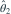
=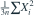
均估计p。以下正确的是？方差单侧检验
9个正态观测的样本标准差为16.03。检验 对 ，5%上侧临界值χ²₀.₉₅(8)=15.507。结论为？
条件概率方程组
。P(A∪B)为？
平移混合密度
X~U(0,1)，独立的Y以1/3、2/3概率取1、3。X+Y的密度在(3,4)上为？
对称信道与先验
输入AAA、BBB、CCC的先验概率为0.4、0.3、0.3。各字符独立传输，正确概率α，错成任一其他字符概率(1−α)/2，0<α<1。收到ABC后，输入AAA的概率为？
正态和的对称性
(X,Y)联合正态，边际为N(4,1)、N(6,99)。无论相关系数如何，P(X+Y≤10)为？
正态混合方差
X以概率p来自N(0,1)，以概率1−p来自N(1,1)。Var(X)为？
同方差变量的线性组合
X、Y独立且方差均为σ²>0。α²+β²>0时，αX+βY与αX−βY的相关系数为？
相邻差的方差估计
独立同分布样本方差为σ²。使
 无偏估计σ²的c为？
无偏估计σ²的c为？Laplace 位置参数 MLE
5个独立观测来自
 ，且观测互异。θ的MLE为？
，且观测互异。θ的MLE为？三角形上的差
(X,Y)在顶点(0,1)、(1,0)、(1,1)的三角形上均匀分布。U=X−Y的方差为？
Poisson 阶乘矩估计
Xᵢ独立服从Pois(λ)，T=ΣXᵢ，样本量n。λ³的无偏估计为？
容斥
P(A)=0.55，P(B)=0.45，P(A∪B)=0.75。恰有一个事件发生的概率为？
条件抽样
8个球中3红5白，不放回取2个。已知至少有1红，恰有2红的概率为？
补集独立
A、B独立，P(A)=0.3、P(B)=0.4。 为？
贝叶斯诊断
某状态先验概率0.02。检测对有此状态者阳性率0.95，对无此状态者阳性率0.04。观察到阳性，该状态的后验概率约为？
随机排列
5个不同对象等可能排成一列，指定的两个对象相邻的概率为？
生日碰撞
5次独立抽取均匀数字0—9。至少有两次相同的概率为？
全概率
先等概率选盒1或盒2。盒1含2红1白，盒2含1红3白。从选中盒中抽1球为红的概率为？
几何概率
在单位正方形内均匀取点(U,V)。|U−V|≤1/3的概率为？
Borel–Cantelli 第一引理
若事件序列满足
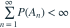
，可推出？条件独立与独立
先随机取θ为0.2或0.8，各概率1/2；给定θ后，X、Y独立服从Bernoulli(θ)。无条件Cov(X,Y)为？
密度归一化
f(x)=cx²，0<x<2，其余为0。c为？
混合型分布
X以概率1/3等于0；以概率2/3来自U(0,3)。P(X≤1)为？
二项众数
X~Bin(8,0.3)。概率质量最大的位置是？
几何尾概率
每次试验独立，成功概率1/4。首次成功前恰有3次失败的概率为？
Poisson 奇偶概率
X~Pois(λ)。P(X为偶数)为？
指数分布的中位数
X服从均值为6的指数分布，其中位数为？
平方变换
X~U(−2,2)，Y=X²。当0<y<4时，Y的分布函数为？
对数正态中位数
lnX~N(μ,σ²)，σ>0。X的中位数为？
Gamma 可加性
X、Y独立，分别服从形状2、3且速率均为4的Gamma分布。X+Y服从？
Weibull 变换
X≥0，生存函数
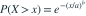
，a,b>0。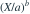
服从？条件离散分布
X、Y独立，分别服从Pois(2)、Pois(3)。给定X+Y=4，X服从？
正态条件方差
二元正态向量的Var(X)=9，Var(Y)=16，相关系数为0.6。Var(Y|X=x)为？
Jacobian
U=X+Y，V=X−Y。反变换
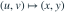
的Jacobian行列式绝对值为？均匀次序的联合密度
两个独立U(0,1)变量的最小值L和最大值M，其联合密度在0<l<m<1上为？
独立指数的比较
X~Exp(2)，Y~Exp(5)，二者独立。P(X<Y)为？
密度可分解性
联合密度在0<x<1、0<y<1上为4xy。X、Y的关系为？
和与差的独立
X、Y独立正态，方差分别为2和3。U=X+Y，V=3X−2Y。以下正确的是？
支持区域限制
联合密度在0<x<y<2上为常数1/2。P(Y>1)为？
条件二阶矩
X~U(0,2)，给定X=x后Y~U(−x,x)。E(Y²)为？
随机和的生成函数
N~Pois(λ)，每次标记独立为Bernoulli(p)，并与N独立。前N个标记之和服从？
尾和公式
非负整数变量N满足P(N≥k)=，k=1,2,…。EN为？
Jensen 不等式
X>0，E(X)=2且E(1/X)存在。必有？
随机和方差
N~Pois(3)，Yᵢ独立同分布且与N独立，EYᵢ=2、VarYᵢ=5。S=
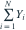
的方差为？最佳线性预测
EX=1，EY=4，VarX=2，Cov(X,Y)=3。使E[(Y−a−bX)²]最小的(a,b)为？
中心矩
EX=2，EX²=7，EX³=30。三阶中心矩为？
相关系数与尺度
Corr(X,Y)=0.4。Corr(−2X+1,3Y−5)为？
全方差分解
已知E[Var(Y|X)]=3，Var[E(Y|X)]=2。Var(Y)为？
Gamma 矩母函数
X的矩母函数为
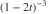
，t<1/2。Var(X)为？条件期望的正交性
Y有有限二阶矩，m(X)=E(Y|X)。以下哪项一定为0？
止损期望
X为非负连续变量，生存函数为S(x)，
![h(d)=E[(X-d)_+]](practice/math/b229e17fdc63be86357a.svg) 。当S在d处连续时，h′(d)为？
。当S在d处连续时，h′(d)为？Markov 不等式
X≥0且EX=3。Markov不等式给出的P(X≥12)上界为？
样本均值的概率界
独立同分布样本方差4，样本量400。切比雪夫不等式给P(|
−μ|<0.5)的下界为？弱大数定律
Xᵢ独立同分布且E|Xᵢ|<∞。样本均值依概率收敛到？
Poisson 极限
Xₙ~Bin(n,2/n)，n趋于无穷。Xₙ依分布收敛到？
连续映射定理
 依概率成立。下列哪个依概率收敛到lnθ？
依概率成立。下列哪个依概率收敛到lnθ？Slutsky 定理
，
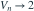
依概率。 的极限分布为？Delta 方法
总体均值μ>0、方差σ²有限。
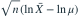
的渐近方差为？假定样本均值为正的概率趋于1。收敛方式
下列蕴含关系哪项正确？
正态近似连续性修正
X~Bin(100,0.5)。用正态近似估计P(X≤55)，作连续性修正后的标准化上界为？
最大值的极限分布
X₁,…,Xₙ独立U(0,1)，Mₙ=maxXᵢ。n(1−Mₙ)依分布收敛到？
样本方差的期望
独立样本总体方差σ²，。EVₙ为？
已知均值的平方和
Xᵢ独立N(μ,σ²)，μ已知。 服从？
Student t
Z~N(0,1)，U~χ²(8)，两者独立。Z/√(U/8)服从？
F 分布倒数
F~F(5,9)。1/F服从？
样本均值与方差
正态总体样本中，样本均值
和无偏样本方差S²满足？样本中位数分布
5个独立U(0,1)观测的样本中位数服从？
样本极差的期望
n≥2个独立U(0,1)观测，极差R=max−min。ER为？
指数样本的枢轴量
Xᵢ独立Exp(λ)，参数是速率。 服从？
正态样本方差的方差
正态样本的无偏样本方差为S²，样本量n≥2。Var(S²)为？
二项样本比例
100个独立Bernoulli(0.2)观测。样本成功比例的标准差为？
偏差与MSE
估计量的偏差为0.3、方差为0.16。均方误差为？
Bernoulli Fisher 信息
n个独立Bernoulli(p)观测，0<p<1。关于p的Fisher信息为？
MLE 不变性
总体为Exp(λ)，样本均值为3。参数q=P(X>2)的MLE为？
Rao–Blackwell 改进
T为充分统计量，U为参数θ的无偏估计且方差有限。E(U|T)满足？
Beta 共轭更新
p先验为Beta(2,3)。10次伯努利观测中4成功、6失败。后验均值为？
Gamma–Poisson 共轭
λ先验为Gamma(形状2,速率3)。4个Pois(λ)观测总和为10。后验分布为？
正态已知方差区间
总体正态、标准差8，样本量64，样本均值30。取z₀.₉₇₅=1.96，95%均值区间为？
置信水平的含义
频率学派95%置信区间的正确解释为？
估计量相合性
估计量Tₙ满足偏差1/n、方差2/n。以下结论正确的是？
指数速率无偏修正
样本来自Exp(λ)，n>1，T=ΣXᵢ。λ的无偏估计为？
检验方向
检验H₀:μ=0对H₁:μ>0，观察Z=2.1，已知Φ(2.1)=0.9821。p值为？
两类错误
在其他条件相同时，将固定样本量检验的拒绝域缩小，通常会怎样？
Neyman–Pearson 检验
独立样本来自N(μ,1)。检验简单原假设μ=0对简单备择μ=1，最强检验的拒绝域具有哪种形式？
拟合优度自由度
拟合优度检验合并后有8个类别，模型中2个自由参数用样本估计。通常使用的渐近χ²自由度为？
置信区间与检验对偶
采用相互对应的双侧5%检验与95%置信区间。若μ₀在已得到的置信区间外，结论为？
回归斜率
含截距简单线性回归，Sxx=20、Sxy=−30。最小二乘斜率为？
决定系数
含截距回归模型的总平方和200、残差平方和50。R²为？
预测区间与均值区间
在相同x₀和置信水平下，正态简单回归的单个新观测预测区间与均值响应置信区间相比？
方差分析 F 值
单因素方差分析有3组、总样本量15，组间平方和24、组内平方和36。检验组均值相同的F值为？
回归残差自由度
线性回归含截距和3个解释变量，设计矩阵满列秩，样本量20。残差平方和估计误差方差时的分母为？
混合分布的分布函数
的密度为  （
（ ）。定义 ：当
）。定义 ：当  时取 2，当
时取 2，当  时取 ，当
时取 ，当  时取 1。
时取 1。 等于多少？
等于多少？最大次序统计量的无偏校正
独立样本来自
， 。用
。用  估计 ，它的方差为多少？
估计 ，它的方差为多少？均方误差最优的收缩系数
独立样本来自
，记最大值为 。在估计量 中，使 最小的  是多少？
是多少？事件指示量的相关系数
事件满足
 、
、 、
、 。令
。令  为指示变量，它们的相关系数为多少？
为指示变量，它们的相关系数为多少？三角区域上的条件分布
随机点在区域
内均匀分布。 等于多少？参数函数的最大似然估计
总体密度为
，、。参数  的最大似然估计为哪一项？
的最大似然估计为哪一项？幂密度族的 Fisher 信息
独立样本来自
（，）。整个容量为 n 的样本关于 的 Fisher 信息是多少？参数函数的 C-R 下界与有效性
在密度
（）下，令  。以下哪项正确？
。以下哪项正确？单因素方差分析 F 统计量
假定各组观测相互独立、服从正态分布且具有相同方差。单因素方差分析共有 5 个水平，每个水平独立观测 4 次；组间平方和为 12，组内平方和为 5。检验各水平均值相等的 F 统计量及原假设下自由度为哪项？
两个独立比例差的区间估计
甲、乙两组独立随机抽样，甲组 200 人中成功 140 人，乙组 300 人中成功 180 人。用未合并比例的 Wald 方法，取
 ， 的近似 95% 置信区间是哪项？
， 的近似 95% 置信区间是哪项？Poisson 均值的得分型大样本检验
1000 份独立同分布保单的索赔次数服从
，总索赔次数为 180。检验 对 ，用原假设方差构造正态近似统计量。取双侧 10% 临界值 1.645，结论是哪项？指数寿命和的正态近似
100 项独立任务的耗时均服从均值 10 分钟的指数分布。用中心极限定理近似，总耗时位于 900 至 1200 分钟之间的概率是多少？给定 、。
一元回归的显著性 F 检验
假定回归误差相互独立、服从均值为零且方差相同的正态分布，设计点固定。含截距的一元线性回归有 12 对观测，中心化平方和为
 、
、 、
、 。检验回归斜率为零的 F 统计量及自由度是哪项？
。检验回归斜率为零的 F 统计量及自由度是哪项？有界变量的最大方差
某随机收益 X 几乎处处落在区间 [2,10]。关于它的方差，以下哪项正确？
独立正态子样本构造 t 统计量
9 个独立观测来自
。前 6 个观测的均值记为 A，后 3 个观测的均值和无偏样本方差记为 B、 。统计量
。统计量  服从哪种分布？
服从哪种分布？受约束 Bernoulli 最大似然估计
8 次独立 Bernoulli 试验中有 7 次成功，参数限制为 。p 的最大似然估计是多少？
异方差测量的最优线性无偏权重
三台仪器独立测量同一常数
，测量值分别为 ，都无偏，标准差分别为 1、2、3。在  中，最小方差无偏估计的权重是哪项？
中，最小方差无偏估计的权重是哪项？Fisher 信息的重参数化
容量 n 的独立样本来自
 ，令新参数
，令新参数  。整个样本关于
。整个样本关于  的 Fisher 信息 为多少？
的 Fisher 信息 为多少？方差稳定化与恒定信息参数
容量 n 的独立样本来自
。下面哪一个新参数  ，能使样本关于 的 Fisher 信息恒等于 n？
，能使样本关于 的 Fisher 信息恒等于 n？倒数参数的 C-R 下界
容量 n 的独立样本来自
，。若存在满足正则条件、方差有限的  的无偏估计量 T，则其方差必须满足什么下界？
的无偏估计量 T，则其方差必须满足什么下界？正态均值双侧检验的阈值
样本来自 ，样本量为 64。检验 ，拒绝域为 。要使显著性水平为 0.05，取
，c 应为多少？双侧检验的 p 值
已知总体标准差为 3，独立正态样本量为 25，样本均值为 101.2。检验 对双侧备择，给定 ，p 值为多少？
均值与标准差共用参数的枢轴区间
独立样本来自
 ，，样本量 25，观测样本均值为 10。用枢轴量
，，样本量 25，观测样本均值为 10。用枢轴量  和 反演，得到的 95% 置信区间约为哪项？
和 反演，得到的 95% 置信区间约为哪项？已知方差正态均值的区间
某正态总体的方差已知为 4，独立抽取 25 个观测，样本均值为 13.2。取
，总体均值的 95% 置信区间为哪项？含未知参数的遗传模型拟合优度
三类独立抽样观测的计数为 20、100、80，理论概率为
 ，p 未知。用最大似然估计 p 后进行 Pearson 拟合优度检验。已知
，p 未知。用最大似然估计 p 后进行 Pearson 拟合优度检验。已知  ，结论是哪项？
，结论是哪项？Poisson 过程等待时间与无记忆性
某设备的故障构成速率为每小时 0.2 次的 Poisson 过程。已知它连续 6 小时没有故障，再连续运行 3 小时仍无故障的条件概率是多少？
两个均匀变量乘积的概率
X、Y 独立服从
 。
。 等于多少？
等于多少？不相关但不独立的菱形分布
随机点
在菱形  （
（ ）内均匀分布。下面的结论哪项正确？
）内均匀分布。下面的结论哪项正确？去均值观测之间的相关性
6 个独立同分布观测具有正的有限方差，记样本均值为
。两个不同的去均值观测 与 的相关系数为多少？中心化固定设计下的 OLS 协方差
固定设计线性模型 ，10 个误差独立服从 。已知 、。最小二乘估计的性质哪项正确？
分段密度的矩估计
总体密度在
时为 ，在 时为  ，其中
，其中  。样本均值为
。样本均值为  。用一阶原点矩方程得到的 的估计值是？
。用一阶原点矩方程得到的 的估计值是？区间计数的最大似然
同一分段模型：（
），（）。20 个样本中有 13 个小于 1。 的最大似然估计为？分段模型的充分统计量
样本独立同分布，密度在
、 上分别为 、。以下哪个是一维充分统计量？
上分别为 、。以下哪个是一维充分统计量？分段模型的 Fisher 信息
密度在
、 上分别为 、，。一个观测关于 的 Fisher 信息是？区间比例估计的有效性
独立同分布样本的密度为 （
）、（），其余处为零，。令 。关于该估计，哪项正确？正态标准差的无偏估计
来自
的样本量为  ，
， 已知。使
已知。使  无偏估计 的 是？
无偏估计 的 是？绝对离差估计的方差
已知且  。令
。令  。
。 的方差是？
的方差是？标准差参数的信息量
 ， 已知，待估参数是标准差
， 已知，待估参数是标准差  。一个观测关于 的 Fisher 信息是？
。一个观测关于 的 Fisher 信息是？无偏估计的 C-R 效率
正态总体均值已知，估计标准差的无偏统计量
。以“C-R 下界除以实际方差”定义效率， 的效率为？已知均值的方差有效估计
样本来自
 ， 已知，参数
， 已知，参数  是方差。令
是方差。令  。以下哪项给出
。以下哪项给出  及其有效性？
及其有效性？幂密度 MLE 的偏差
，。令  ，样本量
，样本量  ，最大似然估计为
，最大似然估计为  。其期望为？
。其期望为？幂密度无偏修正的方差
在
模型中，， 。无偏估计
。无偏估计  的方差为？
的方差为？幂密度的矩估计
，。 的一阶矩估计为？分位数估计法
，。若用样本中位数 代替总体中位数，得到的 的估计为？参数倒数的有效估计
来自 ，。对 ，统计量  满足？
满足？幂密度的完全充分统计量
，。令 。关于  估计 ，哪项正确？
估计 ，哪项正确？均匀位置族的似然平台
按闭区间密度版本写似然，独立同分布样本来自
 ，
， 已知。令
已知。令  ，
， ，已知
，已知  。 的最大似然估计集合是？
。 的最大似然估计集合是？均匀位置的中程无偏估计
样本来自
， 已知。中程统计量  的期望为？
的期望为？中程与样本均值的效率
样本来自
。 的方差为 ![2c^2/[(n+1)(n+2)]](practice/math/708eb4959a893a14a273.svg) 。当 时，与 相比哪项正确？
。当 时，与 相比哪项正确？次序区间的精确覆盖率
从
独立抽取 个观测。用 ![[X_{(1)},X_{(n)}]](practice/math/3fada2f680b520b35e9f.svg) 作为 的区间，覆盖率为？
作为 的区间，覆盖率为？精确区间所需样本量
正态样本用极值区间
估计均值，希望覆盖率至少为 。最小样本量为？Gamma 速率 MLE 的偏差
Gamma 总体密度为
 ， 已知。设
， 已知。设  ，。速率 MLE
，。速率 MLE  的偏差为？
的偏差为？Gamma 尺度的有效估计
Gamma 总体的形状
已知、速率  未知。令
未知。令  估计
估计  。哪项正确？
。哪项正确？Gamma 速率的样本信息量
独立来自形状 已知、速率 未知的 Gamma 分布。样本关于 的 Fisher 信息为？Gamma 速率的精确区间
Gamma 样本的形状
已知、速率 未知。令 ， 表示下侧 p 分位点。 的等尾
表示下侧 p 分位点。 的等尾  置信区间是？
置信区间是？平方速率函数的 C-R 下界
Gamma 样本形状
已知、速率 未知。若  无偏估计
无偏估计  ，且满足 C-R 正则条件，则其方差下界为？
，且满足 C-R 正则条件，则其方差下界为？均匀端点的乘法区间覆盖率
样本来自
，量 是 n 个样本的最大值。对  ，区间
，区间 ![[aM,bM]](practice/math/3197bb6f49cdced01593.svg) 的覆盖率为？
的覆盖率为？最短乘法置信区间
从
取一个样本 。在覆盖率为 的区间 （）中，哪组系数使期望长度最小？两总体端点比的无偏估计
独立样本分别来自 与 ，样本量为 m、n，
。样本最大值分别为 。使 无偏估计 的 c 是？均匀端点比的区间反演
 、
、 独立，记
独立，记  。若
。若  ，端点比
，端点比  的一个精确 区间是？
的一个精确 区间是？Pareto 双参数最大似然
总体生存函数为 （）， 均未知。n 个观测不全相同，记 。MLE 组合为？
Pareto 双参数的充分统计量
Pareto 密度为 ，两个参数均未知。由因子分解可直接得到哪组充分统计量？
Pareto 形状的无偏修正
Pareto 两参数 均未知，
。令 。已知 （第二参数为速率）。 的无偏估计为？Pareto 阈值的单侧区间
Pareto 生存函数为
 ，形状 已知，
，形状 已知， 。对 ， 的精确覆盖率为 的区间是？
。对 ， 的精确覆盖率为 的区间是？对数正态参数的矩估计
 ，两参数未知。样本一阶、二阶原点矩分别记
，两参数未知。样本一阶、二阶原点矩分别记  。 的矩估计为？
。 的矩估计为？对数正态均值的 MLE
，两参数未知。令 ，。总体均值 的 MLE 为？
指数变换 MLE 的偏差
，本题假定
已知。令 ，MLE 为 。 为？定时右删失的速率 MLE
10 个独立指数寿命同时开始观测，速率为
。在时刻 10 停止，3 个失效寿命为 5.3、6.0、6.7，其余 7 个只知超过 10。 的 MLE 为？定数删失的平均寿命估计
10 个独立指数寿命同时开始观测，观测到第 3 个失效即停止，失效时刻为 5.3、6.0、6.7。总体平均寿命
的 MLE 为？直方图密度估计的均方误差
固定区间 B 的宽度为 h，真实概率为 。n 个独立样本落入 B 的个数为 N。在该区间内用 估计 。其均方误差为？
不等组距的直方图
非负样本分组为
 ，频数分别为
，频数分别为  ，总数为 n。采用各组内常数的直方图密度估计，第三组高度是？
，总数为 n。采用各组内常数的直方图密度估计，第三组高度是？直方图分布的均值
把
四组的频率 均匀摊在各组内，得到估计分布。该分布的均值是？多项计数的协方差
每次独立抽球产生 L 种互斥颜色之一，第 j 种概率为
 。n 次抽取后两种不同颜色的计数为
。n 次抽取后两种不同颜色的计数为  。
。 为？
为？零截断 Poisson 归一化
离散密度为 ，
 ，
， 。常数 c 为？
。常数 c 为？零截断 Poisson 的似然方程
样本来自
![P(X=k)=\lambda^k/[k!(e^\lambda-1)]](practice/math/11b3af43db6d0b4a2231.svg) ，
， 。若
。若  ， 的 MLE 应解哪个方程？
， 的 MLE 应解哪个方程？零截断模型的边界似然
零截断 Poisson 模型参数空间为
。若所有观测都恰好为 1，则关于 MLE 的正确说法是？Bernoulli 方差的估计
来自 Bernoulli
的样本量为 ，令  。
。 的无偏估计是？
的无偏估计是？正反面差的无偏估计
抛 n 次硬币，正面数为 X，反面数为 Y，正面概率为 p。仅记录差值 。由 Z 构造的 p 的无偏估计是？
正反面计数的协方差
n 次独立抛硬币，正面概率 p，正反面次数分别为 X、Y。
是？正态均值平方的无偏估计
 独立同分布。以下哪个无偏估计 ？
独立同分布。以下哪个无偏估计 ？正态均值函数的 UMVUE
在
中， 无偏估计 。下列哪一理由足以说明 U 是 UMVUE？正态简单假设的功效
。检验  对
对  ，采用水平 的最强检验。用
，采用水平 的最强检验。用  表示标准正态下侧分位点，该检验在备择下的功效为？
表示标准正态下侧分位点，该检验在备择下的功效为？乘积拒绝域的第一类错误
独立，密度为 （）。用  拒绝 ，其中
拒绝 ，其中  。第一类错误概率为？
。第一类错误概率为？乘积拒绝域的第二类错误
独立同分布，密度为 （），。用 拒绝 ，其中 。在备择  下，第二类错误概率为？
下，第二类错误概率为？复合原假设下的最大错误率
样本来自
，检验  对
对  ，拒绝域为
，拒绝域为  。要使检验大小严格小于 0.01，n 最小为多少？
。要使检验大小严格小于 0.01，n 最小为多少？均匀上端点的临界值
样本来自
，以  检验
检验  对
对  。要求检验大小为 ，则 c 为？
。要求检验大小为 ，则 c 为？端点检验的功效设计
样本来自
，以 拒绝 。要求在 时第二类错误概率不超过 0.1，最小 n 是？固定阈值检验的相合性
独立样本来自 Pois
 ，检验 对
，检验 对  ，拒绝域为
，拒绝域为  。当 n 趋于无穷时，两类错误概率分别趋于？
。当 n 趋于无穷时，两类错误概率分别趋于？新观测预测的 t 枢轴量
独立来自
， ， 是前 n 个观测的无偏样本方差， 为其平方根。哪个统计量服从 ？
， 是前 n 个观测的无偏样本方差， 为其平方根。哪个统计量服从 ？遗漏变量的斜率偏差
真实固定设计模型为
 ，
， 。若仅用截距与 x 回归，斜率估计的期望为？记
。若仅用截距与 x 回归，斜率估计的期望为？记  ，
， 。
。非传递骰子的选择
三枚公平骰子的六个面分别为 A=(1,1,5,5,5,5)、B=(3,3,3,4,4,4)、C=(2,2,2,2,6,6)。对手先选 A，你从 B、C 中选择一枚，以点数严格更大为胜。最优选择及胜率是？
次序乘积的不变性
独立服从 ，令  、
、 。
。 为？
为？集齐两种物品的等待时间
每次独立试验以 0.2 概率得到物品 1，以 0.2 概率得到物品 2，以 0.6 概率无收获。每次至多得一种。集齐两种物品所需总次数 T 的期望为？
分阶段等待的方差
各次试验相互独立，每次获得物品 1、物品 2、无收获的概率分别为 0.2、0.2、0.6 的独立试验。集齐两种物品所需总次数 T 的方差为？
整数倍事件的概率
随机正整数 N 满足
 。对正整数 d，N 能被 d 整除的概率为？
。对正整数 d，N 能被 d 整除的概率为？正态与 Bernoulli 的混合
 与
与  独立，
独立， 。Z 的分布函数为？
。Z 的分布函数为？二维正态的标准化残差
联合正态，均值均为 0、方差均为 1、相关系数 满足 。令 。下列正确的是？Gamma 积分与中心极限定理
下列极限等于多少：？
空盒数的方差
n 个球独立等概率投入 n 个盒子，空盒数为 K，
。设 、。 为？空车位连续的组合概率
8 部不同汽车随机停在一排 12 个位置，所有不重复占位方式等可能。4 个空位置恰好相连的概率为？
另一三角区域的正相关
在顶点  构成的三角形内均匀分布。X 与 Y 的相关系数为？
构成的三角形内均匀分布。X 与 Y 的相关系数为？两个正态变量最大值的期望
独立服从 。 为？连续成功与连续失败的竞争
每次独立试验成功概率为
 。连续出现两次成功或连续出现两次失败时立即停止。最终以两次成功结束的概率为？
。连续出现两次成功或连续出现两次失败时立即停止。最终以两次成功结束的概率为？有放回重复抽球的条件分解
袋中 2 红、3 黑、4 白。首次摸到黑球立即赢；否则有放回继续摸，直到首次再出现首摸颜色或黑色，前者赢、后者输。各次独立等概率摸球。获胜概率为？
均匀最大值的对数变换
三个独立
变量的最大值为 M，令  。Y 服从哪种分布？
。Y 服从哪种分布？两个次序统计量线性组合的方差
六个独立
样本，次序统计量为  。
。 为？
为？非乘积分解密度的条件均值
联合密度为 ，。给定
 时， 为？
时， 为？相关变量的最小方差组合
 ，
， 、
、 、
、 。使
。使 ![\operatorname{Var}[aX+(1-a)Y]](practice/math/6fadf8272f9d1b34eb36.svg) 最小的 a 为？
最小的 a 为？正态线性组合构造 t 变量
 独立服从
独立服从  。若 且
。若 且  服从 t 分布，则 a 为？
服从 t 分布，则 a 为？一般线性模型的预测误差
模型
中设计矩阵满列秩，误差均值为 0、协方差为  。新观测
。新观测  的误差均值为零，与样本误差独立且方差同为 。OLS 预测
的误差均值为零，与样本误差独立且方差同为 。OLS 预测  的均方预测误差为？
的均方预测误差为？独立重复试验与二项概率
三台设备独立工作，每台一天内发生故障的概率为
 。一天内恰有一台故障的概率为多少？
。一天内恰有一台故障的概率为多少？全概率
某零件来自甲厂的概率为 ，来自乙厂的概率为 。甲、乙次品率分别为 和 。随机抽到次品的概率为多少？
贝叶斯公式
某零件来自甲、乙厂的概率分别为 ，相应次品率为 。已知抽到的是次品，来自乙厂的条件概率为多少？
容斥与条件概率
已知
 ，，
，， 。求
。求  。
。不放回抽样
盒中有 4 个红球、6 个白球，随机不放回取 3 个，恰有 2 个红球的概率是多少？
独立与互斥
设 独立，且 。事件“ 中恰有一个发生”的概率为多少？
几何概型
独立且均匀分布于 。求 。分布函数的跳跃
仅取  ，概率分别为
，概率分别为  。若
。若  为其分布函数，
为其分布函数， 等于多少？
等于多少？连续分布的归一化
密度为
 （
（ ），区间外为零。常数 为多少？
），区间外为零。常数 为多少？非单调函数变换
 ，令 。对 ， 的密度为哪项？
，令 。对 ， 的密度为哪项？指数分布无记忆性
寿命
服从率参数为 的指数分布。求  。
。泊松分布的条件截断
 。求
。求  。
。正态分位数
 ，其中第二参数为方差。记标准正态分布的
，其中第二参数为方差。记标准正态分布的  分位数为
分位数为  ，则 的
，则 的  分位数是哪项？
分位数是哪项？联合密度与边缘密度
联合密度
 ，区域为 。对 ， 的边缘密度为哪项？
，区域为 。对 ， 的边缘密度为哪项？条件密度
联合密度
（）。给定 （）， 的条件分布是哪项？独立性判定
联合密度为
 （）。以下哪项正确？
（）。以下哪项正确？卷积
独立且均为 ， 。对
。对  ， 的密度为多少？
， 的密度为多少？离散条件分布
、 且独立。给定 ，
的分布是哪项？二元正态条件均值
联合正态，均值为  ，标准差为
，标准差为  ，相关系数为
，相关系数为  。 为多少？
。 为多少？线性组合的方差
 。求
。求  。
。非线性函数的期望
 。求
。求 ![E[(X-1)^2]](practice/math/49ab7a808ca6a73c4869.svg) 。
。指示变量
将 5 封不同信随机放入 5 个各对应一封信的信封，每封信恰入一个信封。放对信封的信件数的期望是多少？
不相关不等于独立
，。下列结论哪项正确？随机和的方差
 ，与独立同分布的 相互独立，
，与独立同分布的 相互独立， 。令 （ 时 ），求
。令 （ 时 ），求  。
。相关系数的线性变换
，两变量方差均大于零。求 。
切比雪夫不等式
独立同分布样本有总体均值
、方差  。为使切比雪夫界保证 ，样本量至少取多少？
。为使切比雪夫界保证 ，样本量至少取多少？大数定律与连续映射
独立同分布， 。当
。当  时，
时， 依概率收敛于多少？
依概率收敛于多少？中心极限定理标准化
独立同分布，均值为  、方差为
、方差为  。以下哪个量依分布收敛到标准正态？
。以下哪个量依分布收敛到标准正态？二项分布正态近似
 。采用连续性修正，
。采用连续性修正， 的正态近似是哪项？其中
的正态近似是哪项？其中  为标准正态分布函数。
为标准正态分布函数。独立同分布二阶矩平均
独立同分布， 。
。 依概率收敛于多少？
依概率收敛于多少？样本均值分布
从 总体抽取容量为 4 的独立样本。
的分布是哪项？卡方统计量
 是来自 ，
是来自 ， 。
。 的分布是哪项？
的分布是哪项？t 统计量
正态总体均值为
，方差未知。样本容量为 9， 以 8 为分母。统计量 服从什么分布？F 统计量
 且独立。随机变量
且独立。随机变量  的分布是哪项？
的分布是哪项？样本方差的期望
独立同分布样本容量为 10，总体方差为
。令  。求
。求  。
。矩估计
是独立同分布样本，总体密度为 （）。用一阶原点矩得到的 矩估计是哪项？最大似然估计
独立样本来自率参数为
的指数分布，观测值为 。 的最大似然估计为多少？参数相关支撑与边界 MLE
独立来自 ，。采用密度 在 上的版本，最大似然估计是哪项？最大似然估计的不变性
独立同分布于 Bernoulli。设样本中成功次数为 ，。参数 的最大似然估计为多少？无偏估计的构造
独立同分布，均值为 、有限方差为 ，。 是无偏样本方差。以下哪项是 的无偏估计？递推：恰好到达目标
从0出发，每步独立地以相同概率前进1或2格。令 为曾恰好到达第n格的概率。已知 ，则 等于？
囚徒挖洞：失败后重选
囚徒每次独立地等概率选择三条隧道：A用2小时逃出，B用3小时回到起点，C用4小时回到起点。失败后不记得选过哪条；失败耗时已包含返回。逃出的期望总时间是？
囚徒挖洞：记住失败路线
三条隧道A、B、C分别需2小时逃出、3小时返回、4小时返回。囚徒每次在未尝试的隧道中等概率选择，失败后记住并排除该隧道。逃出的期望总时间是？
等待首次连续成功
独立抛一枚公平硬币，直到首次连续出现两次正面。所需抛掷次数的期望是？
吸收概率的首步方程
状态A、B、成功S、失败F构成马尔可夫链。A下一步以1/2到S、1/2到B；B下一步以1/3到A、2/3到F；S和F吸收。从A出发最终到S的概率是？
泊松概率的递推比
设 ，。已知 ，则 是？
随机和：每次尝试的耗时
一次任务成功概率为1/4，成功当次耗时1分钟；失败耗时2分钟，然后独立重试，直到成功。总耗时的期望为？
赌徒破产：公平随机游走
每轮独立地以1/2概率赢1元、1/2概率输1元。资金到0元或5元时停止。从2元开始，先到5元的概率为？
随机承载力与总重量
桥的承载力 ，各车重量 。各车相互独立，且均与C独立。要求 。已知 ，允许的最大整数n为？
共同因素造成的重量相关
桥承载力C独立于所有车辆，
 。有10辆车，每辆重量方差为1，任意不同两辆的协方差为0.2。则
。有10辆车，每辆重量方差为1，任意不同两辆的协方差为0.2。则  是？
是？并联系统：最少部件数
n个独立部件的可靠度均为0.8，至少一个工作系统即工作。要求系统可靠度不低于0.999，最少需要几个部件？
串联系统：最多部件数
n个独立部件的可靠度均为0.99，全部工作系统才工作。要求系统可靠度至少0.95，n最多为？
二取三系统的可靠度
三个部件独立工作，每个可靠度为0.8，至少两个正常则系统正常。系统可靠度为？
至少一次发生的最小n
每份独立保单一年内报案的概率为0.2。至少观察一份报案保单的概率需达到0.95。最少应观察多少份保单？
指数寿命串联系统
两个独立部件寿命分别服从速率2和3的指数分布。任一部件失效系统即停机。系统寿命的期望为？
指数寿命并联系统
两个独立部件寿命均为速率2的指数分布。只要一个仍工作系统就工作。系统寿命的期望是？
Q-Q图：位置与尺度
正态Q-Q图横轴为标准正态理论分位数z，纵轴为样本分位数。散点大致沿 排列。最合理的正态拟合是？
Q-Q图：能判断什么
某组观测的正态Q-Q图接近直线。以下结论中，最恰当的是？
Q-Q图：重尾偏离
正态Q-Q图横轴为标准正态分位数、纵轴为样本分位数。相对穿过中部的参考直线，左端明显偏低、右端明显偏高，最典型的解释为？
最小二乘：算斜率
含截距的一元最小二乘回归，四组数据为 。斜率估计为？
最小二乘：算截距
含截距回归数据为 ，已算得斜率为3/5。截距估计为？
回归残差平方和
数据为 ，最小二乘直线为 。残差平方和SSE为？
正态回归的斜率枢轴
正态一元线性模型有8组固定自变量观测，含截距，误差独立同分布为
， 。令
。令  。则
。则  服从？
服从？回归计算：平移自变量
原回归直线为 。把自变量改记为 ，同一拟合直线在z坐标下的截距是？
零截断泊松：条件分布
独立同分布，![P_\lambda(X_i=k)=\lambda^k/[k!(e^\lambda-1)]](practice/math/91d546e6f2984d8977f6.svg) ，。令
，。令  。给定T=4，
。给定T=4， 是？
是？零截断泊松：概率的UMVUE
为独立零截断泊松观测，，。 为完全充分统计量。若观察到T=4，则 的UMVUE取值为？零截断泊松：λ的无偏改进
独立且为参数λ的零截断泊松分布， 为完全充分统计量。已知  对λ无偏。观察到T=4时，λ的UMVUE等于？
对λ无偏。观察到T=4时，λ的UMVUE等于？普通泊松：零事件概率
独立同分布为
 ，令 。已知T完全充分。观察到T=3时， 的UMVUE为？
，令 。已知T完全充分。观察到T=3时， 的UMVUE为？Gamma指数族：充分统计量
， 独立，密度为  ，x>0，未知速率λ>0。以下哪个是一维充分统计量？
，x>0，未知速率λ>0。以下哪个是一维充分统计量？Gamma速率的Fisher信息
n个独立观测来自形状3、速率λ的Gamma分布。样本对λ的Fisher信息为？
Fisher信息与函数的C-R下界
n个独立观测服从形状3、速率λ的Gamma分布。估计总体均值
 ，任意满足常规条件的无偏估计方差的C-R下界为？
，任意满足常规条件的无偏估计方差的C-R下界为？零截断泊松：边界MLE
有n个独立零截断泊松观测，参数空间为λ>0，观测全为1。关于λ的极大似然估计，哪项正确？
Bernoulli与Beta：平方损失
给定θ， 条件独立且服从Bernoulli(θ)，先验为 。观察到 ，损失为 。Bayes估计为？
缺少先验能否确定Bayes估计
已知给定θ时Xi条件独立同分布为Bernoulli(θ)，样本和为T，损失为平方损失，但没有给定先验。以下哪项正确？
绝对损失：后验中位数
某次观测后，θ的后验分布为 ，即后验密度为2θ，0<θ<1。在损失 下，Bayes估计是？
加权平方损失
θ的后验为
 ，损失为
，损失为  。Bayes估计为？
。Bayes估计为？Bayes二元决策的阈值
根据数据，事件H的后验概率为0.3。行动A表示接受H，H不成立却接受的损失为2；行动B表示拒绝H，H成立却拒绝的损失为5；其余损失为0。最优行动及后验风险为？
Beta-Bernoulli后验预测
先验θ服从Beta(1,1)。给定θ，各次试验条件独立为Bernoulli(θ)。观察4次成功、2次失败后，未来两次都成功的后验预测概率为？
均值区间：用t还是z
独立正态样本n=10，样本均值12，样本标准差S=2， 以n−1为分母。总体方差未知。已知 ，总体均值95%双侧置信区间约为？
正态方差置信区间
正态独立样本n=6，（分母n−1）。已知 ，。总体方差的95%双侧置信区间约为？
最小最大值覆盖总体中位数
从连续总体独立抽样，μ为总体中位数且
 。用 覆盖μ，覆盖率至少0.95所需的最小n为？
。用 覆盖μ，覆盖率至少0.95所需的最小n为？指数速率的枢轴区间
独立样本来自速率λ的指数分布，n=4且 。若a、b分别是 的0.025和0.975下侧分位点，λ的95%等尾置信区间是？
置信区间的频率解释
一种构造方法产生总体均值的95%置信区间。采用频率学派含义，以下解释正确的是？
已知方差：区间宽度与样本量
正态总体标准差已知为5。希望均值95%双侧置信区间的总长度不超过2，取
。最小样本量为？边缘正态不能替代独立性
只知道
各自服从标准正态，未给独立性，也未称为随机样本。以下结论必然成立的是？正态平方和：未中心化
 独立同分布为N(0,1)。 的分布是？
独立同分布为N(0,1)。 的分布是？中心化平方和的自由度
独立同分布为N(0,1)。 的分布是？
的分布是？样本均值与样本方差构造t
独立同分布为N(0,1)，。 服从？分母使用其余观测构造t
独立同分布为N(0,1)。 的分布是？分母包含分子：不是t
独立同分布为N(0,1)，令  。以下说法正确的是？
。以下说法正确的是？平方t的F分布
。 的分布为？
F分布：两个标准化平方和
U与V独立，
 。下列哪个统计量服从
。下列哪个统计量服从  ？
？F分布的倒数
。 服从？
正态正交对比的独立性
独立且服从N(0,1)，令 。哪项正确？卡方比例与Beta分布
U与V独立，。 的分布为？
t分布：方差存在条件
。其均值和方差分别为？
分布函数：右连续与跳跃
记
 。对任意实随机变量X，下列恒等式正确的是？
。对任意实随机变量X，下列恒等式正确的是？广义逆：适用于任意分布
对任意分布函数F，定义
 ，0<u<1。令
，0<u<1。令  。总是成立的是？
。总是成立的是？离散分布的概率积分变换
，F为X的分布函数。
 的分布是？
的分布是？广义分位函数的连续方向
X以各1/2概率取0和1，
，0<u<1。关于u=1/2处的Q，哪项正确？逆变换生成指数变量
，令  。则X的分布与均值为？
。则X的分布与均值为？随机化概率积分变换
X以各1/2概率取0和1。V独立于X且服从U(0,1)，F为X的分布函数。令
![Y=F(X-)+V[F(X)-F(X-)]](practice/math/8f8786d94c4b07b2f6db.svg) 。Y服从？
。Y服从？超几何：至少一好一坏
袋中5个好球、3个坏球，一次不放回抽2个。抽到至少一个好球且至少一个坏球的概率为？
好球改坏：已知首次抽样
袋中5好3坏，首次不放回抽2个，已知恰好一好一坏。把抽到的好球改为坏球，然后将这2个球全部放回。再不放回抽2个，至少有一个好球的概率为？
好球改坏：全概率求解
袋中5好3坏。首次不放回抽2个，把抽到的所有好球改坏，然后2球全部放回。第二次不放回抽2个，至少有一个好球的无条件概率为？
一般标记抽样的后续分布
袋中m个好球、n个坏球。先不放回抽k个，已知其中h个好球；将这些好球改坏并把抽出的k个球全部放回。随后不放回抽s个，其中恰有j个好球的概率为（组合数越界视为0）？
改变颜色并重复到同色
袋中2好2坏。每轮不放回抽2球，先看抽出时的颜色：若同色则停止，若异色则继续；每轮都把抽到的好球改坏，并将2球全放回（停止轮也如此）。停止后再抽2球，至少一好概率为？
至少一个条件下的再次标记
袋中5好3坏，首次不放回抽2球，已知至少抽到一个好球。将抽到的好球改坏，所有抽出球放回。第二次不放回抽2球，至少一好概率为？
均匀半径对应的体积分布
球半径 ，体积
 ，最大可能体积记为
，最大可能体积记为  。则
。则  是？
是？球内均匀点的半径
在半径2的实心球内按体积均匀选一点，R为该点距球心距离，令
，。 等于？全平面密度的归一化常数
联合密度为 ，支撑为整个平面。C为？
第一象限改变归一化常数
密度 仅在x>0、y>0时非零。C应为？
单位圆盘的归一化常数
密度为
 ，仅在
，仅在  非零。C为？
非零。C为？非单调变换的双原像
，令 。Y在0<y<4上的密度为？新观测超过样本最大值
独立同分布且总体连续。令
 。 是？
。 是？原样本不可能超过自身最大值
 独立同分布且连续，。
独立同分布且连续，。 等于？
等于？新观测超过第k次序统计量
 独立同分布且连续。按从小到大排列X样本，
独立同分布且连续。按从小到大排列X样本， 为第三小。
为第三小。 是？
是？均匀次序统计量与Beta
独立且服从U(0,1)， 为第三小。其分布是？
均匀次序统计量的协方差
独立U(0,1)样本量n=5，次序统计量按升序排列。
 为？
为？随机子样本的最大值
有10个独立同分布的连续观测，独立于数值均匀选4个指标，取其观测最大值M。再独立、均匀地从全部10个指标中选I（可能在前4个里）。
 是？
是？标记重捕：整数MLE
封闭总体共有未知整数N个个体。先标记M=40个并放回充分混合，再等概率不放回捕获n=30个，其中m=7个带标记。假定标记不影响捕获。N的MLE为？
标记重捕：相邻两个极大值
封闭总体标记M=50个，放回混合后不放回捕获n=40个，其中m=10个带标记。N为未知整数且满足可行支撑。关于MLE哪项正确？
标记重捕：没有重捕标记
封闭总体先标记M=20个并放回，随后不放回捕获n=10个，其中m=0。参数空间为满足支撑的正整数N，没有预设上限。关于N的MLE哪项正确？
标记重捕：可行参数下界
第一次标记M=30个并放回，第二次捕获n=25个，其中m=8个已标记。总体大小N必须满足什么下界？
卷积先求积分区间
X与Y独立，
 ，
， （速率1），Z=X+Y。用
（速率1），Z=X+Y。用  求密度，在z>0时x的有效积分区间为？
求密度，在z>0时x的有效积分区间为？均匀加指数：中间区间
X与Y独立，
 。Z=X+Y在0<z<2上的密度为？
。Z=X+Y在0<z<2上的密度为？均匀加指数：尾部区间
X与Y独立，
。Z=X+Y在z≥2时的密度为？卷积后求和的概率
X与Y独立，
。 为？
为？平移均匀加指数
X与Y独立，（速率2）。Z=X+Y在−1<z<1时的密度为？
均匀减指数：负半轴
X与Y独立，
。令D=X−Y。在d<0时D的密度为？不用卷积计算和的矩
X与Y独立，
。Z=X+Y的均值和方差分别为？已知和后的条件密度
X与Y独立，
，Z=X+Y。给定Z=1时，X的条件密度在0<x<1上为？两个同速率指数变量之和
X、Y独立，均服从速率2的指数分布。Z=X+Y在z>0上的密度为？
两个不同速率指数变量之和
X与Y独立，。Z=X+Y在z>0上的密度为？
泊松过程：区间计数
报案按速率每小时3次的齐次泊松过程到达。未来20分钟内恰有2次报案的概率为？
泊松过程：独立稀疏化
报案为每小时5次的齐次泊松过程。每次报案独立地以概率0.2属于重大案件，且分类与到达过程独立。两小时内没有重大案件的概率为？
给定总次数后的子区间计数
 是任意正速率的齐次泊松过程，给定N(4)=6。则
是任意正速率的齐次泊松过程，给定N(4)=6。则  为？
为？给定到达次数的最大到达时刻
齐次泊松过程在(0,2]内恰有3次到达，最后一次到达时刻为T。给定该条件， 等于？
第二次到达的等待时间
齐次泊松过程速率为每小时2次，第二次到达时刻为 。 为？
复合泊松：总赔款方差
一年赔案数 ；各笔赔款独立同分布，均值3、方差2，且与N独立。总赔款 （N=0时S=0）。 为？
可逆变换与完全充分性
设
独立同分布，，，。记  ，n是样本量。令
，n是样本量。令  。下列说法正确的是？
。下列说法正确的是？对数统计量的离散分布
设
独立同分布，，，。记 ，n是样本量。 表示把a个不同元素分成b个非空、无标号组的第二类Stirling数。令 。以下哪一个表达式对所有整数
表示把a个不同元素分成b个非空、无标号组的第二类Stirling数。令 。以下哪一个表达式对所有整数  都等于 $P_\la…
都等于 $P_\la…固定总和的有序联合事件
设
独立同分布，，，。记 ，n是样本量。取n=3。给定T=5， 为？固定总和的单个条件分布
设
独立同分布，，，。记 ，n是样本量。取n=3。给定T=5， 在k=1、2、3处的条件概率依次为？
在k=1、2、3处的条件概率依次为？一般单个条件概率公式
设
独立同分布，，，。记 ，n是样本量。 表示把a个不同元素分成b个非空、无标号组的第二类Stirling数。设 ，给定T=N，其中N为整数且 。对 $1\leq k\leq…普通泊松与零截断泊松的条件对照
 独立且服从普通 。已知
独立且服从普通 。已知  ，三个变量均为正的条件概率为？已知
，三个变量均为正的条件概率为？已知  。
。固定总和后的负相关
设
独立同分布，，，。记 ，n是样本量。取n=3。给定T=5， 依次为7/15、2/5、2/15。则
依次为7/15、2/5、2/15。则  为…
为…一般联合条件分布的归一化
设
独立同分布，，，。记 ，n是样本量。 表示把a个不同元素分成b个非空、无标号组的第二类Stirling数。给定T=N，取正整数 满足 。以下哪…总和的分布不再是零截断泊松
设
独立同分布，，，。记 ，n是样本量。取n=3。已知 ，则  是？
是？单点概率的UMVUE：给定T=N的一般式
设
独立同分布，，，。记 ，n是样本量。 表示把a个不同元素分成b个非空、无标号组的第二类Stirling数。设 ，k为事先固定的正整数。另记普通泊松概率 $p_\lambda(k)=e^{-…λ的UMVUE：一般样本量
设
独立同分布，，，。记 ，n是样本量。 表示把a个不同元素分成b个非空、无标号组的第二类Stirling数。已知 对λ无偏，T完全充分。λ的UMVUE为哪个？奇偶性构造无偏估计与UMVUE
设
独立同分布，，，。记 ，n是样本量。取n=3，已知T完全充分。利用 估计 。观察到T=5时， 的UMVUE为？极大似然方程与唯一解
设
独立同分布，，，。记 ，n是样本量。取n=3，观察到T=5。λ的极大似然估计应怎样确定？极大似然的边界：总和等于样本量
设
独立同分布，，，。记 ，n是样本量。观测结果满足T=n。参数空间仍为 ，则下列结论正确的是？零截断泊松的Fisher信息
设
独立同分布，，，。记 ，n是样本量。取n=3。在  处，整个样本对λ的Fisher信息 为？
处，整个样本对λ的Fisher信息 为？信息保留与Cramér–Rao下界
设
独立同分布，，，。记 ，n是样本量。取n=3，只保留 ，不再保存原样本。在 处，任何基于V且满足正则条件的λ的无偏估计量，其方差的Cramér–Rao下界为？
暂时没有匹配的题目。试试更短的关键词，或将模块和难度恢复为“全部”。